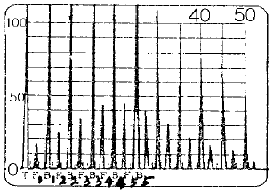
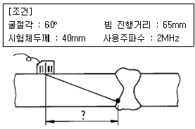

초음파비파괴검사기사(구) (2004-09-05 기출문제)
1과목: 초음파탐상시험원리
1. 초음파탐상시험 직전, 해야 할 행위로 불필요한 것은?
- 탐상기의 시간축을 확인한다.
- 탐촉자의 주파수 및 굴절각을 선정한다.
- 시험체의 재질 및 두께를 확인한다.
- STB A1 시험편의 재질을 확인한다.
(정답률: 알수없음)

2. 기본 공진주파수를 결정하는데 사용되는 공식은? (단, F = 공진주파수, V = 전파속도, T = 두께(거리))
- F = V/T
- F = V/2T
- F = T/V
- F = VT
(정답률: 알수없음)
3. 탐촉자의 표시가 5Z10x20ND일 때 D의 뜻은?
- 가변각형
- 수침형
- 2진동자형
- 판파형
(정답률: 알수없음)
4. 다른 비파괴검사와 비교할 때 초음파탐상검사의 장점이 아닌 것은?
- 감도가 높아 미세한 결함을 검출할 수 있다.
- 감도가 높아 결함의 모양을 정확하게 구별할수 있다.
- 투과력이 우수하여 두꺼운 시험체 검사가 가능하다.
- 불연속의 위치를 정확하게 측정할 수 있다.
(정답률: 알수없음)
5. 다음 입자의 크기와 파장의 관계중 가장 산란의 영향이 적은 경우는?
- 1배
- 1/2배
- 1/10배
- 1/100배
(정답률: 알수없음)
6. 초음파 탐촉자의 진동자 특성에서 최대 강도의 산에서 최대 강도의 10%되는 산까지의 지속시간을 나타내는 것을 무엇이라 하는가?
- 댐핑폭
- 펄스폭
- 진동폭
- 공진폭
(정답률: 알수없음)
7. 초음파탐상시험을 방사선투과시험과 비교했을 때 장점을 표현한 것으로 잘못된 것은?
- 탐상기기가 경량(輕量)이다.
- 검사체의 한쪽 편만 접근 가능하면 검사할 수 있다.
- 결함의 방향과 검사 각도에 무관하며 영구적으로 항상 기록 보존이 가능하다.
- 결함의 판두께 방향의 위치 추정이 용이하다.
(정답률: 알수없음)
8. 다음 중 이 성능이 나쁘면 정확한 에코높이가 얻어지지 않고 결함을 빠뜨리기도 하고 과소 또는 과대 평가하게 되는 탐상기 성능과 관계가 많은 이것은?
- 시간축 직선성
- 분해능
- 증폭 직선성
- 거리진폭특성 곡선
(정답률: 알수없음)
9. 횡파에 대한 설명 중 틀린 것은?
- 파를 전달하는 입자가 파의 진행방향에 수직으로 진동한다.
- 속도가 늦기 때문에 동일한 주파수에서 종파에 비해 파장이 길다.
- 종파에 비해 동일 주파수에 대해 탐상감도가 우수하지만 투과력이 약하다.
- 기체와 액체내에서는 존재하지 않는다.
(정답률: 알수없음)
10. 근거리 음장의 길이에 대한 식을 고려해 볼 때, 다음 중 최소의 근거리 음장을 결정지을 수 있는 것은?
- 물거리의 감소
- 대비 표적의 크기 감소
- 탐촉자 직경의 증가
- 시험 주파수의 감소
(정답률: 알수없음)
11. 다음 중 음향방출시험에서 신호를 해석하는 방법에 들어가지 않는 분석법은?
- 속도 분석
- 에너지 분석
- 진폭 분석
- 주파수 분석
(정답률: 알수없음)
12. 초음파 탐상기의 화면에 나타난 2개의 에코 A, B가 있다. 이때 A에코의 높이가 B보다 10배 크다면 B에코의 높이를 현재의 A에코 높이까지 높이려면 증폭기를 몇 ㏈ 올려야 하는가?
- 10
- 100
- 20
- 200
(정답률: 알수없음)
13. 횡파의 굴절각이 90° 가 되어 표면파가 생성될 때의 각도를 무엇이라 하는가?
- 제1 임계각
- 제2 임계각
- 제3 임계각
- 제4 임계각
(정답률: 알수없음)
14. 초음파탐상시험시 스킵(skip)거리는 무엇에 의해 결정되는가?
- 회절각
- 펄스폭
- 주파수
- 입사각
(정답률: 알수없음)
15. 자분탐상시험에서 결함누설자속에 대해 기술한 것이다. 올바른 것은?
- 자분탐상시험에서 시험체에 자계를 주어 자속을 발생시킨 경우 자력선이 결함에 가능한한 많이 차단되지 않는 방향의 자계를 이용할 필요가 있다.
- 강자성체에 발생하는 자속은 자계의 세기와 함께 감소한다.
- 강자성체 중에 자속이 포화되어 그 이상 자속이 흐르지 않는 상태를 최대자속의 상태라 부르고 이 때 자로의 단위단면적당의 자속량을 포화자속밀도라 부른다.
- 시험체표면에 요철이 있는 경우 포화자속밀도에 달하면 요철부에도 누설자속이 많이 발생하여 자분을 흡착 하고 결함자분모양의 식별이 곤란해진다.
(정답률: 알수없음)
16. 다음 중 미세한 표면균열의 검출에 가장 부적당한 비파괴검사법은?
- 방사선투과시험법
- 자분탐상시험법
- 와전류탐상시험법
- 침투탐상시험법
(정답률: 알수없음)
17. 다음 중 초음파탐상시험으로 알 수 없는 것은?
- 주파수의 측정
- 미세균열 검출
- 시험편의 두께
- 평균 입자의 크기
(정답률: 알수없음)
18. 표면파 탐촉자를 대향시켜 그 탐촉자법에 의해 표면개구결함의 깊이를 측정하는 경우 건전부에서의 빔 진행거리는 WG이고 그 상태에서 결함부를 측정하니 빔 진행거리는 WF일 때 이 경우 결함깊이(H)는? (단, 시간축은 표면파 음속으로 조정되어 있으며, 표면파음속은 2950m/s이고, 탐촉자간 거리는 동일하다.)
- (WF - WG)/2
- WF - WG
- (WF - WG)/2950
- (WF - WG) x 2950
(정답률: 알수없음)
19. 재료에 외력을 가하여 방출되는 초음파로 시험체 내부 변화를 탐지하는 초음파 응용 기술은?
- 반발경도시험
- 음향방출시험
- 압력변화시험
- 서모그래피시험
(정답률: 알수없음)
20. 다음 중 액체내에만 존재할 수 있다고 생각되는 파의 진동형태는?
- 종파(longitudinal wave)
- 횡파(transverse wave)
- 표면파(surface wave)
- 판파(lamb wave)
(정답률: 알수없음)
2과목: 초음파탐상검사
21. 압전진동자의 기본주파수는 일차적으로 무엇의 함수인가?
- 공급전압 펄스의 길이
- 기기 펄스 증폭기의 증폭 특성
- 진동자의 두께
- 흡음재의 종류
(정답률: 알수없음)
22. 잔류에코가 생기는 원인의 설명으로 틀린 것은?
- 감쇠상수가 작을 때
- 펄스반복주파수가 높을 때
- 어닐링 상태일 때
- 결정조직이 조대할 때
(정답률: 알수없음)
23. 어떤 시험체를 탐촉자 5Z20N을 사용하여 탐상하였더니 임상에코가 많이 나타나서 탐상이 되지 않았다. 탐상을 할수 있도록 하기 위해서는 다음중 어느 탐촉자를 사용하여 탐상하는 것이 좋은가?
- 10Q10N
- 5Q20N
- 2Z20N
- 5Z10N
(정답률: 알수없음)
24. 용접부 초음파탐상시험시 탐촉자의 선정은 대단히 중요하다. 탐촉자 선정에 고려해야 될 사항이 아닌 것은?
- 탐상부위의 표면상태
- 탐상두께 범위
- 결함에 대한 탐촉자의 감도
- 표준시험편의 크기
(정답률: 알수없음)
25. 다음 중 수침법에 대한 설명으로 옳은 것은?
- 수침법에서는 직접접촉법보다 10dB 이상 감도를 올릴 필요가 있으므로 효율이 좋은 진동자의 사용이 편리하다.
- 수침법에 사용하는 물은 오염을 방지해야 하므로 가급적 생수를 받아 즉시 사용한다.
- 탐촉자는 일반 수직탐상용이나 경사각탐상용을 그대로 사용한다.
- 수침법에 사용하는 물의 온도는 실내온도보다 최소 20℃ 이상 높아야 한다.
(정답률: 알수없음)
26. 초음파 탐상시 탐촉자와 시험체 표면 사이에 접촉 매질인 물, 글리세린 등을 바르는 이유는?
- 매끄러운 주사를 위해
- 탐촉자의 마모를 줄이기 위해
- 초음파 발생을 돕기 위해
- 음향임피던스의 mismatch를 적게하기 위해
(정답률: 알수없음)
27. 공진법에 의한 초음파탐상시험은 다음 중 어떤 파형을 이용하는가?
- 연속적인 횡파
- 연속적인 종파
- 펄스 타입의 횡파
- 펄스 타입의 종파
(정답률: 알수없음)
28. X형 개선의 용접부결함 중 내부용입부족은 방향성 때문에 검출하기 어려운 결함이다. 이를 검출하기 가장 좋은 방법은?
- 탠덤탐상법
- 수침법
- 표면파법
- 용접선상 주사법
(정답률: 알수없음)
29. 두께 20㎜인 맞대기용접부를 굴절각 60° 의 탐촉자로 탐상하여 스크린상에 50㎜ 거리에서 결함지시가 나타났다. 이 결함의 깊이는? (단, sin60° = 0.87, cos60° = 0.5, tan60° = 1.73)
- 5㎜
- 15㎜
- 25㎜
- 35㎜
(정답률: 알수없음)
30. 초음파탐상시험시 용접한 철판 내부의 용입영역(fusion Zone)에 평행하게 있는 결함의 탐상에 가장 좋은 방법은?
- 표면파를 사용한 접촉 경사각 탐상
- 종파를 사용한 수직 접촉법
- 표면파를 사용한 수침법
- 횡파를 사용한 경사각 탐상
(정답률: 알수없음)
31. 그림은 작은 결함을 갖는 두께 25㎜강판의 탐상도형이다. 결함에코 높이로 결함을 평가할 때 다음 중 어느 것으로 평가해야 하는가?

- F1
- F2
- F3
- F4
(정답률: 알수없음)
32. 경사각탐상에서 결함을 중심으로 한 원주상을 중심을 향하여 탐촉자를 이동시켜 결함에 대한 초음파 빔의 방향을 변화시키는 주사법은?
- 진자주사
- 지그재그주사
- 목돌림주사
- 두갈래주사
(정답률: 알수없음)
33. 판재를 초음파 경사각탐상법으로 검사할 때 가장 검출하기 어려운 결함은?
- 초음파빔에 수직으로 존재하는 균열
- 방향이 불규칙한 개재물
- 표면과 평행한 라미네이션
- 작은 불연속이 군집된 경우
(정답률: 알수없음)
34. 탠덤 탐상법(tandem technique)에 대한 다음 설명중 틀린것은?
- 탠덤 탐상법이라는 것은 사각탐상에 있어서 탐상면에 수직한 결함을 검출하기 위해 탐촉자를 2개 전후로 배치하고 한 쪽은 송신용으로, 다른 쪽은 수신용으로 하는 탐상법이다.
- 탠덤 탐상에서 최소 입사점간 거리는 2개의 사각 탐촉자를 동일 방향으로 향하게 전후로 배치하고, 양자를 가능한 한 근접시켰을 때 상호 입사점 간의 거리를 말한다.
- X홈 맞대기용접부에 발생하는 융합 검출에는 탠덤 탐상법이 적합하다.
- X홈 맞대기용접부에 발생하는 백가우징(back gauging)부의 결함 검출에는 탠덤 탐상법이 적합하다.
(정답률: 알수없음)
35. 그림과 같이 용접부를 경사각 탐촉자로 검사하여 결함을 검출하였다. 탐촉자-결함거리는 얼마인가?

- 32.5mm
- 60.0mm
- 56.3mm
- 34.6mm
(정답률: 알수없음)
36. 경사각 탐촉자의 주사 방법에서 다음 중 기본 주사에 해당되는 주사 방법이 아닌 것은?
- 좌우 주사
- 진자 주사
- 목돌림 주사
- 지그재그 주사
(정답률: 알수없음)
37. 조대한 조직의 금속재료를 초음파탐상시험할 때 초음파의 감쇠를 줄이기 위한 방법으로 올바른 것은?
- 횡파 전용 탐촉자로 탐상한다.
- 접촉법에서 수침법으로 검사 방법을 변경한다.
- 열처리를 하여 조직을 미세화 시킨 후 검사한다.
- 탐상 주파수를 높인다.
(정답률: 알수없음)
38. 판두께 30mm의 맞대기 용접부를 실측 굴절각 71° 의 탐촉자로서 경사각 탐상하기 위한 가장 적당한 측정 범위는? (단, cos71° = 0.33, sin71° = 0.95, tan71° = 2.9 이다)
- 100mm
- 125mm
- 150mm
- 200mm
(정답률: 알수없음)
39. 경사각 탐촉자에는 각도가 표시되어 있는데 이에 대한 설명이 맞는 것은?
- 입사각을 기입한 것이다.
- STB-A1 시험편에 의한 굴절각을 기입한 것이다.
- 알루미늄, 동, 강에 대한 굴절각을 기입한 것이다.
- 스테인리스 합금재에 대한 굴절각을 기입한 것이다.
(정답률: 알수없음)
40. 초음파탐상검사시 사용되는 탐촉자의 압전효과에 대한 설명으로 틀린 것은?
- 압전효과에는 정압전 효과와 역압전 효과가 있다.
- 정압전 효과는 압전물질에 기계적인 압력을 주면 그 물질에 전압이 발생하는 효과를 말한다.
- 역압전 효과는 압전물질에 전압을 걸어주면 그 물질에 변형이 생겨 진동이 발생하는 효과를 말한다.
- 정압전 효과는 초음파의 송신에 사용되고 역압전 효과는 초음파를 수신하는데 사용된다.
(정답률: 알수없음)
3과목: 초음파탐상관련규격및컴퓨터활용
41. 자료 전송방식의 하나로서 한 글자를 이루는 각 비트들이 하나의 전송선을 통하여 한 비트씩 순서적으로 전송되는 방식은?
- 아날로그 전송
- 디지털 전송
- 직렬 전송
- 병렬 전송
(정답률: 알수없음)
42. KS D 0233 압력용기용 강판의 초음파탐상검사에 따른 수직 탐촉자의 사용시 판 두께에 따라 적용 탐상감도, 시험주파수 및 진동자의 치수가 다르다. 다음 중 판두께별 적용 사항이 틀린 것은?
- 13 이상∼ 20㎜ 이하, 탐상감도 STB-N1, 25%-시험주파수 5㎒-진동자의 유효지름 20㎜
- 40 초과∼ 60㎜ 이하, 탐상감도 STB-N1, 70%-시험주파수 2㎒-진동자의 유효지름 20㎜
- 100 초과∼ 160㎜ 이하, 탐상감도 STB-N1, 50%-시험주파수 5㎒-진동자의 유효지름 30㎜
- 강판 두께가 200㎜를 초과하는 것에 대하여는 주문자와 제조자와의 협의에 따른다.
(정답률: 알수없음)
43. ASME Sec.Ⅴ art.5에서 교정시험편은 시험할 주조품의 전살두께에 대해 사용하는 경우 ± 몇 %의 살두께를 갖는 것으로 제작되어야 하는가?
- 10
- 15
- 25
- 30
(정답률: 알수없음)
44. ASTM E 127에 규정된 표준시험편의 표지 번호가 5-0150이다. 이 시험편의 표준공의 직경과 탐상면으로부터 표준공까지의 거리는?
- 직경 5/64 인치, 거리 150mm
- 직경 5/64 인치, 거리 1.5인치
- 직경 5mm, 거리 150mm
- 직경 5mm, 거리 1.5인치
(정답률: 알수없음)
45. KS D 0233(압력용기용 강판의 초음파탐상검사)에서 요구하는 탐상기의 성능 중 틀린 것은?(단, A스코프 탐상기)
- 펄스 반사법이어야 한다.
- 증폭 직선성은 양의 최대편차와 음의 최대편차의 절대치 합이 6%이하 여야 한다.
- 원거리 분해능은 2MHz에서 9mm이하, 5MHz에서 7mm이하 여야 한다.
- 불감대는 5㎒일 때는 15㎜이하, 2㎒일 때는 20㎜이하 여야 한다.
(정답률: 알수없음)
46. KS B 0896에 규정된 H선과 L선의 dB의 차이는?
- 6dB
- 10dB
- 12dB
- 20dB
(정답률: 알수없음)
47. KS-B-0896 규격에서 시험 결과에 따른 흠의 분류시, 동일하다고 간주되는 깊이에서 흠과 흠의 간격이 큰쪽의 흠의 지시 길이와 같거나 그것보다 짧은 경우는?
- 독립 결함으로 짧은 쪽 길이를 기준한다.
- 독립 결함으로 긴 쪽 길이를 기준한다.
- 연속 결함으로 두 흠 길이를 합한 것을 기준한다.
- 연속 결함으로 두 흠 길이 및 그들 사이 간격까지 합한 것을 기준한다.
(정답률: 알수없음)
48. KS D 0233의 압력용기용 강판의 초음파탐상검사에서는 결함의 밀집도를 평가하기 위해 환산결함 개수를 구한다. 이 때 어떤 결함으로 환산되는가?
- ○결함
- △결함
- □결함
- X결함
(정답률: 알수없음)
49. KS B 0831에 의한 STB-G형 감도표준시험편에서 인공결함의 직경(d)이 다른 것은?
- STB-G V5
- STB-G V15 - 2
- STB-G V15 - 4
- STB-G V8
(정답률: 알수없음)
50. 인터넷의 도메인 네임(Domain Name)분류 중 기관 표기로 "or" 에 해당하는 미국의 도메인 네임 분류로 맞는 것은?
- com
- net
- org
- gov
(정답률: 알수없음)
51. KS B 0897에 따라 알루미늄 맞대기용접부의 초음파탐상검 사시 표면에 수직인 그루브면의 융합불량을 검출한 경우 병용하는 방법은?
- 직사법
- 2탐법
- 평행법
- 탠덤법
(정답률: 알수없음)
52. 수직빔을 사용한 교정작업시 대비시험편의 온도와 실제 탐상할 검사체의 온도는 실제로 서로 가까울수록 좋다. ASME Sec.V Art.4에서는 직접 접촉법 사용시 두 온도차이를 최대한 얼마까지 허용하고 있는가?
- 10℉(5.6℃)
- 25℉(13.9℃)
- 35℉(19.4℃)
- 40℉(22.2℃)
(정답률: 알수없음)
53. KS B 0831에는 표준시험편의 종류에 따른 재료검사에 대하여 규정하고 있다. G형 STB시험편에 대한 설명으로 잘못된 것은?
- 재료의 종파 감쇠계수는 5MHz에서 5dB/m이하
- 재료의 종파 감쇠계수는 10MHz에서 20dB/m이하
- 직접 접촉법에 의해 공칭 지름 20mm인 탐촉자 사용
- 수침법에 의해 공칭 지름 20mm인 탐촉자 사용
(정답률: 알수없음)
54. ASME 규격에 따라 시험재를 초음파탐상할 때 탐촉자의 중첩 정도(over lap)로 맞는 것은?
- 탐촉자 치수의 5%
- 탐촉자 치수의 10%
- 탐촉자 진동자 치수의 5%
- 탐촉자 진동자 치수의 10%
(정답률: 알수없음)
55. ASME Sev.Ⅷ, Div.1, App.12(압력용기 용접부의 초음파탐상검사)에 따라 두께가 각각 1인치와 2인치인 평판을 맞대기 용접한 곳을 초음파 탐상 검사한 결과 다음과 같은 흠이 검출되었다. 다음 중 불합격인 지시는?
- 참조기준(reference level)의 50%에 해당하는 2인치 슬래그
- 참조기준(reference level)의 50%에 해당하는 1인치 기공
- 참조기준(reference level)의 110%에 해당하는 0.5인치 슬래그
- 참조기준(reference level)의 110%에 해당하는 0.2인치 기공
(정답률: 알수없음)
56. ASME Sev.V, SA-388(대형 단강품에 대한 초음파탐상시험의 표준)에 따라 저면반사기법 (Back-Reflection Technique)으로 수직탐상 할 때 저면반사에코 높이의 감소를 일으키는 원인이 아닌 것은?
- 불연속의 존재
- 두께의 감소
- 접촉 불량
- 전면과 후면이 평행하지 않음
(정답률: 알수없음)
57. Windows98의 디스플레이 등록정보에서 할 수 있는 기능들 중 틀린 것은?
- 배경화면을 내가 좋아하는 사진이나 배경으로 바꿀 수 있다.
- HTML문서는 배경 화면으로 지정할 수 없다.
- 일정시간이 경과하여도 컴퓨터를 사용하지 않으면 화면 보호기를 사용하여 화면을 보호할 수 있도록 할 수 있다.
- 화면 배색을 조정할 수 있다.
(정답률: 알수없음)
58. KS B 0896에 따른 용어의 정의중 2탐촉자법(2탐법)에 대한 설명으로 가장 적합한 것은?
- 탐촉자를 직접 시험재에 접촉시켜 탐상하는 방법
- 탐촉자를 간접적으로 시험재에 접촉시켜 탐상하는 방법
- 초음파의 송신 및 수신을 1개의 탐촉자로 해서 탐상하는 방법
- 초음파의 송신 및 수신을 각각 다른 탐촉자로 직접 시험재에 접촉시켜 탐상하는 방법
(정답률: 알수없음)
59. 다음은 통신 프로토콜에 대한 설명이다. 가장 적절하지 않은 것은?
- 통신 프로토콜은 반드시 표준을 따라야 한다.
- 컴퓨터 시스템 사이의 통신 규약이다.
- 동일한 프로토콜을 사용하여야 통신이 가능하다.
- TCP/IP도 프로토콜의 한 예이다.
(정답률: 알수없음)
60. 시스템의 날짜, 시간, HDD 타입 등의 정보를 기억하고 있는 것은 무엇인가?
- RAM
- ROM
- BIOS
- CMOS
(정답률: 알수없음)
4과목: 금속재료학
61. 공정형 상태도를 나타내는 가장 대표적인 합금은?
- Cu - Ni
- Cu - Aℓ
- Aℓ - Si
- Ni - Fe
(정답률: 알수없음)
62. 합금의 미세화 처리를 목적으로 용융금속에 금속 나트륨을 첨가한 것은?
- Cu - Zn 계
- Zn - Aℓ - Cu 계
- Aℓ - Si 계
- Cu - Ni 계
(정답률: 알수없음)
63. 강에서 발생하는 백점(flake)의 주 원인은?
- 산소
- 수소
- 질소
- 황
(정답률: 알수없음)
64. 동합금중에서 가장 높은 강도와 경도를 얻을수 있는 석출 경화성 합금은?
- Cu - Be 합금
- Cu - Sn 합금
- Cu - Zn 합금
- Cu - Cr 합금
(정답률: 알수없음)
65. 금속의 용해에 Si 등의 산성 산화물이 생기는 경우 사용해서는 안되는 내화물은?
- Aℓ 2O3
- SiO2
- CaO
- Cr2O3
(정답률: 알수없음)
66. 항복점이 크고 내마모성이 양호한 레일과 차륜을 만들려고 할 때 어느 재료를 선택하는 것이 가장 좋겠는가?
- 0.1% 탄소강
- 0.7% 탄소강
- 1.2% 탄소강
- 2.0% 탄소강
(정답률: 알수없음)
67. Ni 합금에서 염산에 대한 내식성의 향상을 위하여 첨가하는 원소로 가장 좋은 금속은?
- Aℓ
- Pb
- Mo
- Si
(정답률: 알수없음)
68. 고체 침탄법에서 침탄제로써 가장 우수한 것은?
- 목탄 및 코크스
- NaCN과 KCN
- NaCl2 및 CaCO3의 혼합물
- 목탄 60%와 BaCO3의 혼합물
(정답률: 알수없음)
69. 구상흑연 주철의 첨가제, Zr, U, Ti의 환원용, 전기 방식용 양극으로 사용되는 비철 금속은?
- Zn
- Mg
- Aℓ
- Sn
(정답률: 알수없음)
70. 침상 주철(acicular cast iron)의 바탕의 주 조직은?
- 베이나이트
- 미세한 펄라이트
- 마텐자이트
- 오스테나이트
(정답률: 알수없음)
71. Cr-Mo강에 대한 설명이 틀린 것은?
- Cr강에 소량의 Mo을 첨가하면 펄라이트강이 된다.
- Cr-Mo강에는 C가 대략 0.27-0.48[%] 정도이다.
- Cr-Mo강의 기계적 성질은 Ni-Cr강과 비슷하여 용접도 용이하다.
- Cr-Mo강은 Mo가 들어있어 뜨임취성이 크다.
(정답률: 알수없음)
72. Cu의 결정 구조는 FCC이다. lattice parameter가 3.61Å 일 때 Cu의 밀도는? (단, Cu의 원자량은 63.54 gr이고, Avogadro 수는 6.023 × 1023 molecule/mole이다)
- 약 9.95 g/cm3
- 약 8.95 g/cm3
- 약 6.48 g/cm3
- 약 4.48 g/cm3
(정답률: 알수없음)
73. 열전대 중 가장 높은 온도를 측정할 수 있는 것은?
- 백금-백금 로듐
- 철-콘스탄탄
- 크로멜-알루멜
- 구리-콘스탄탄
(정답률: 알수없음)
74. 탄소강판이나 기계가공부에 존재하는 결함의 검출에 적합한 비파괴 시험은?
- 슴프 측정법
- 자분 탐상법
- 스프링 시험법
- 크리프 시험법
(정답률: 알수없음)
75. 스테인리스강의 주요 성분으로 맞는 것은?
- P-Mn
- S-Se
- Si-Pb
- Ni-Cr
(정답률: 알수없음)
76. 냉각속도가 600℃/sec 에 도달하면 Ar' 잭변태는 완전히 없어지고 Ar“ 잣변태만이 일어나 완전 마텐자이트의 조직으로 되는 것은?
- 분열변태냉각속도
- 항온변태속도
- 상부임계냉각속도
- 하부변태속도
(정답률: 알수없음)
77. 쾌삭강(free cutting steel)은 어느 성분을 더 함유시킨 것인가?
- C
- Si
- Mn
- S
(정답률: 알수없음)
78. 강을 침탄한 후 1, 2차 담금질을 하는 목적은?
- 1차는 중심부 미세화, 2차는 표면을 경화 시킨다.
- 1차는 중심부 조대화, 2차는 표면을 미세화 시킨다.
- 1차는 중심부 미세화, 2차는 표면을 연화 시킨다.
- 1차는 중심부 조대화, 2차는 응력을 제거시켜 준다.
(정답률: 알수없음)
79. Aℓ - Cu - Mg 합금에 있어서의 S′ 중간상의 형상을 옳게 나타낸 것은?
- 만곡(bend)상이다.
- 구(sphere)상이다.
- 라스(lath)상이다.
- 실린더(cylinder)상이다.
(정답률: 알수없음)
80. 응고 온도 범위가 넓고 역편석(inverse segregation)이 나타나는 것은?
- 알루미늄 청동
- 주석 청동
- 알루미늄 황동
- 함규소 황동
(정답률: 알수없음)
5과목: 용접일반
81. 주철의 아크 용접시 균열 방지방법이 아닌 것은?
- 예열과 후열을 한다.
- 열영향부를 백선화시킨다.
- 용접 후 열간 피닝을 한다.
- 순 니켈 용접봉을 사용한다.
(정답률: 알수없음)
82. 비드밑 균열의 비파괴 검사방법으로 가장 적합한 것은?
- 외관 검사
- 초음파 투과시험
- 자분 탐상시험
- 방사선 탐상시험
(정답률: 알수없음)
83. 용접부의 기공 발생에 대한 원인으로 가장 관계가 적은 것은?
- 용접부의 급속한 응고
- 용접봉과 이음부의 습기
- 용접 이음 설계의 부적당
- 모재 중 황(S)의 함량이 클 경우
(정답률: 알수없음)
84. 피복아크 용접회로에서 전류가 용접전원에서 흐르기 시작하여 용접전원으로 되돌아오는 순서로 가장 적합한 것은?
- 전원 → 용접봉홀더 → 아크 → 용접봉 → 모재 → 전원
- 전원 → 용접봉홀더 → 용접봉 → 아크 → 모재 → 전원
- 전원 → 아크 → 용접봉 → 모재 → 용접봉홀더 → 전원
- 전원 → 용접봉 → 용접봉홀더 → 아크 → 모재 → 전원
(정답률: 알수없음)
85. 다음 중 겹쳐놓은 두개의 용접재 한쪽에 둥근 구멍 대신에 좁고 긴 홈을 만들어 놓고 그 곳을 용접하는 이음의 형태는?
- 슬롯 용접(Slot weld)
- 비드 용접(Bead weld)
- 플러그 용접(Plug weld)
- 플레어 용접(Flare weld)
(정답률: 알수없음)
86. 저수소계 피복아크 용접봉의 건조온도 및 건조시간으로 다음 중 가장 적합한 것은?
- 150~200℃, 2시간
- 300~350℃, 1 ~ 2시간
- 200~300℃, 3시간
- 100~150℃, 3 ~ 4시간
(정답률: 알수없음)
87. 1차 입력전원이 24.2[KVA]인 피복 아크용접기를 1차 전원 전압 220[V]에 접속하고자 할 경우 퓨즈(fuse) 용량으로 가장 적합한 것은?
- 220[A]
- 200[A]
- 110[A]
- 100[A]
(정답률: 알수없음)
88. 가동 철심형 아크 용접기의 특성 설명으로 틀린 것은?
- 광범위한 전류 조정이 어렵다.
- 미세한 전류 조정이 불가능하다.
- 누설자속의 가감으로 전류를 조정한다.
- 누설자속의 영향으로 아크가 불안정하게 되기 쉽다.
(정답률: 알수없음)
89. 다음 용접의 종류 중 비가열식 압접인 것은?
- 폭발 용접
- 업셋 용접
- 시임 용접
- 마찰 용접
(정답률: 알수없음)
90. 불활성가스 텅스텐 아크용접(TIG용접)에서 아크쏠림(Arc Blow 또는 Magnetic Blow) 현상이 일어나는 원인이 아닌것은?
- 자장 효과(magnetic effects)
- 용접 전류 조정이 너무 낮게 되었을 때
- 텅스텐 전극봉이 탄소에 의해 오염 되었을 때
- 풋 컨트롤(foot control)장치로 전류를 감소시킬 때
(정답률: 알수없음)
91. 정격 2차전류가 200A, 정격 사용율이 30%인 용접기로 180A로 용접할 경우 허용 사용율은 약 몇 % 인가?
- 33
- 37
- 53
- 67
(정답률: 알수없음)
92. 다음의 연강 용접이음 중 이음의 정적강도가 가장 작은 이음의 종류는?
- 양쪽 덥개판 전면 필릿용접
- 양쪽 덥개판 측면 필릿용접
- 원형 플러그 용접
- 맞대기 홈용접
(정답률: 알수없음)
93. 다음 중 예열불꽃이 강할 때 절단에 미치는 영향으로 올바른 것은?
- 절단속도가 늦어진다.
- 드래그가 증가한다.
- 역화를 일으키기 쉽다.
- 절단면이 거칠어진다.
(정답률: 알수없음)
94. 용적이 40리터인 산소 용기의 고압계가 90㎏f/㎝2 으로 나타났다면 시간당 300리터의 산소를 소비하는 팁으로는 이론적으로 몇 시간 용접할 수 있는가? (단, 산소와 아세틸렌의 혼합비는 1:1 이다)
- 6시간
- 9시간
- 12시간
- 15시간
(정답률: 알수없음)
95. 고속 회전운동을 하는 한쪽 재료에 다른 한쪽을 접촉시키고 축방향으로 힘을 가하여 생성되는 열을 이용하여 용접하는 것은?
- 마찰 용접
- 저주파 용접
- 폭발 용접
- 고주파 용접
(정답률: 알수없음)
96. 피복 금속아크 용접시 모재측의 발열량의 크기를 순서대로 표시한 것으로 옳은 것은?
- 직류 역극성 ＞ 교류 ＞ 직류 정극성
- 교류 ＞ 직류 역극성 ＞ 직류 정극성
- 교류 ＞ 직류 정극성 ＞ 직류 역극성
- 직류 정극성 ＞ 교류 ＞ 직류 역극성
(정답률: 알수없음)
97. 연납땜과 경납땜은 땜납의 융점 온도 몇 ℃를 기준으로 하는가?
- 250
- 350
- 450
- 550
(정답률: 알수없음)
98. 용접전류 300A, 아크전압 35V, 아크길이 3mm, 용접속도 20cm/분의 용접 조건으로 피복 아크용접을 실시할 경우 아크가 단위길이 1cm당 발생하는 전기적 에너지는?
- 7560 joule/cm
- 9450 joule/cm
- 15750 joule/cm
- 31500 joule/cm
(정답률: 알수없음)
99. AW-300 무부하 전압 80V, 아크 전압 30V인 교류아크 용접기를 사용할 경우 용접기의 역률 및 효율은 몇 % 인가?(단, 용접기의 내부 손실은 5kW 이다.)
- 역률 58.3, 효율 64.3
- 역률 62.5, 효율 58.3
- 역률 64.3, 효율 58.3
- 역률 58.3, 효율 62.5
(정답률: 알수없음)
100. 일반적인 용접작업의 순서를 나열한 것으로 다음 중 가장 적합한 것은?
- 용접부 청소 → 절단 및 가공 → 가접 → 검사 및 판정 → 본용접
- 절단 및 가공 → 용접부 청소 → 본용접 → 가접 → 검사 및 판정
- 가접 → 용접부 청소 → 절단 및 가공 → 본용접 → 검사 및 판정
- 절단 및 가공 → 용접부 청소 → 가접 → 본용접 → 검사 및 판정
(정답률: 알수없음)